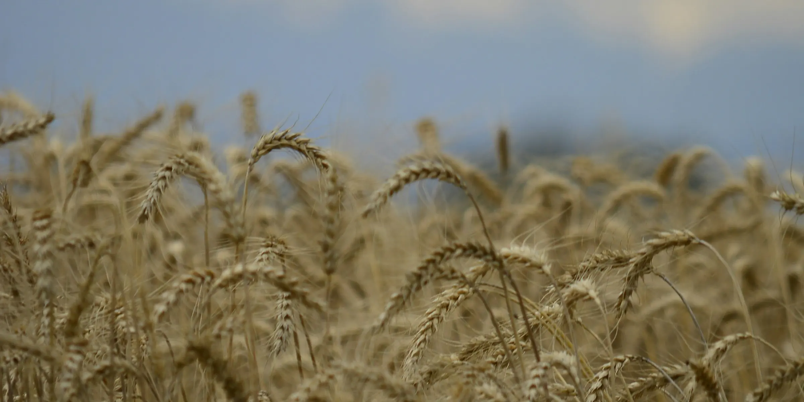

Vital Agri Nutrients (Pvt) Ltd · Lahore · since 2010
Soil first. Then the crop. Then the bag.
We were in a field before we were a company.
کمپنی بعد میں بنی، ہم کھیت میں پہلے سے تھے
Soil first
For 24 of our 28 crop plans, the Nutrition creator, a free pilot tool on van.com.pk, changes the amount of each product per acre to suit your soil test.
Then the crop
Each harvest takes nutrients out of the soil. The nutrient that is left in shortest supply then limits the growth of the next crop.
Then the bag
We put nutrients back with products made for that crop and for the soil it grows in.
Calcareous soil, above pH 8Sulfur-coated urea granuleRootThe drawing shows calcareous soil in cross-section, with wheat seedlings and sulfur-coated urea granules. The green points are nitrogen moving from a granule to a root. The drawing is not to scale.
Pakistan applied 63 kg of fertiliser nutrients to each acre of its cropland in the calendar year 2023, against a world average of 47 kg per acre.
The fertiliser nutrients counted are nitrogen, phosphate as P₂O₅ and potash as K₂O, added together. We converted FAO's figures from per hectare to per acre.
83 : 1
In 2023, Pakistan applied 83 kg of nitrogen (N) for every 1 kg of potash (K₂O).
Nitrogen (N) Potash (K₂O)
The ratio is our calculation from FAOSTAT figures.
−22%
Between the fiscal years 1999-2000 and 2023-24, the wheat yield for each kg of fertiliser nutrients fell by 22%.
We divided the wheat yield per acre by the fertiliser nutrients applied per acre of arable land. The fertiliser figure covers all crops. The wheat yields are for the 2 fiscal years. The fertiliser figures are for arable land in the calendar years 2000 and 2023. The 63 kg figure is for cropland. We calculated the measure from published figures.
29.1%
Pakistan's nitrogen use efficiency (NUE) was 29.1% in 2023 (an FAO estimate).
Pakistan's harvested crops contained about 29 kg of nitrogen for every 100 kg of nitrogen added to cropland in 2023. The 100 kg counts nitrogen from all sources, including fertiliser and manure. In 2023, NUE in the United States was about 71% (an FAO estimate).
Sources: Our World in Data and FAO; FAOSTAT, including the Cropland Nutrient Balance (December 2025 release); World Bank indicator AG.CON.FERT.ZS; the Pakistan Economic Survey. FAO's figures for fertiliser nutrients applied in 2023 are 156 kg per hectare for Pakistan and 117 kg per hectare for the world. We divided these figures by 2.471 to give kg per acre.

Wheat field, Gujrat, Pakistan. Photograph by Salar Arif, from Unsplash.
02 · What we make
The nutrient in shortest supply limits the growth of the crop
A crop needs 17 essential nutrients. Plain urea supplies only nitrogen. More nitrogen does not make up for a shortage of another nutrient. Our 24 brands cover 7 families of products.
Each number is the count of our brands in that family. Secondary nutrients are calcium, magnesium and sulfur. Choose a family to see its brands.
Nitrogen, phosphate and potash: 3 examples from Pakistan's fields
Choose a nutrient to see what happens to it in the soil and which of our products is made for that nutrient.
Nitrogen · example 1 of 3
Nitrogen lost to the air and to water
In soil with a pH above 8, part of the nitrogen from urea left on the soil surface is lost to the air as ammonia before the crop can use it. Irrigation water also carries nitrate down below the roots.
One of our nitrogen productsVital UreaSulfur-coated urea · N 32% min · S 13% min
In 2023, Pakistan applied 83 kg of nitrogen (N) for every 1 kg of potash (K₂O). With so little potash (K₂O) applied, crops take most of their potassium (K) from what the soil already holds.
One of our potash productsVital PotashN 11% · K₂O 44% · boron-coated
Why does so little of the phosphate I apply reach the root?
In calcareous soil with a pH above 8, calcium binds most of the applied phosphate before the root can take it up.
Why does the way I apply fertiliser matter?
The form of a nutrient, when it is applied and where it is placed decide how much of it the crop takes up.
Why does the plan change with my sowing date?
The date on which each crop stage begins depends on the sowing date. The plan therefore moves the date of each application to match the new stage dates. The amount of each product per acre stays the same.
03 · The method
How a product is developed, made, tested and traced, in 6 steps
Each product goes through 6 steps before it reaches a dealer, from trials on our research farms to the lab report for each batch.
01
Research farm
since 2009
We opened our first research farm in 2009, 1 year before the company was incorporated. Trials have run on our research farms every season since then. In 2026, the trials cover 17 years.
02
Formulation
17 years of trial data
We set each formulation from the trial results. We also use the results of the 770,160 samples that the Punjab soil testing programme tested in about 2016 to 2018.
03
Plant
about 50,000 tonnes a year
We make the product at 1 plant site in Lahore. The plant has 5 production lines: granular, coated, liquid, water-soluble and compound NPK. Its installed capacity is about 50,000 tonnes of product a year.
04
Laboratory
LAB 336 · ISO/IEC 17025:2017
The Pakistan National Accreditation Council (PNAC) accredited our laboratory to ISO/IEC 17025:2017 under accreditation number LAB 336. The accreditation covers 8 of the laboratory's 21 fertiliser tests. We test every batch before it leaves the plant.
05
PSQCA licences
34 licences
We hold 34 licences from the Pakistan Standards and Quality Control Authority (PSQCA). Of these licences, 22 are for our own brands. The other 12 cover registered formulations that a partner company can sell under its own brand.
06
Lab report online
by batch number, free
The batch number printed on each bag links the bag to the record of the day the batch was made. Typing the batch number on our website opens the lab report on which the batch was approved for dispatch.
The capacity and licence figures are as of July 2026. The brand count is as of November 2026.
Verify a bag
Check the lab report for your bag by its batch number
We test every batch before it leaves the plant. Type the batch number printed on the bag to open the approved lab report for that batch, with the values our laboratory measured. There is no charge. You do not need to post a sample.
VAN · TESTED BEFORE IT LEAVES THE PLANT
BATCH No.VU25186
The batch number above is an example of the format printed on a bag.
Type the batch number on the verify page to get the lab report. You do not need to sign in or give a phone number. You need only the bag.
To have 1 of our products tested blind, send 500 g of it to Sample Reception and book a normal paid test. Sample Reception is at 604 Al-Hafeez Heights, Gulberg III, Lahore. It works from a building separate from our laboratory. The sample is given a code in place of the product name. The analysts therefore do not know that the sample is our product.
For companies
Launch a product under your own brand name
We formulate, manufacture, register and test crop nutrition products that partner companies sell. Most of these products carry the partner company's own brand name.